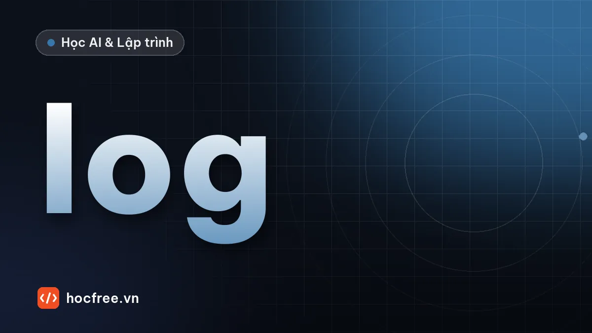

Logging trong Python: ghi log thay print, mức log, file xoay vòng
Dùng module logging thay print: 5 mức log, getLogger theo module, định dạng, ghi ra file xoay vòng và lưu traceback khi có lỗi.

Học xong bài này, bạn sẽ
- Hiểu 5 mức log và khi nào dùng
- Cấu hình log ra màn hình và file có xoay vòng
- Ghi traceback bằng logger.exception
Nên học trước: Xử lý ngoại lệ: try, except, raise
Nội dung bài viết
Script chạy lúc 2 giờ sáng trên máy chủ báo lỗi. Không ai ngồi nhìn màn hình, và mọi dòng print đã biến mất. Thứ duy nhất giúp bạn biết chuyện gì đã xảy ra là file log. Module logging có sẵn trong Python làm việc này tốt hơn print ở mọi mặt: có mức độ, có thời gian, ghi ra file, bật tắt mà không sửa code.
1. Bắt đầu nhanh
import logging
import sys
logging.basicConfig(
level=logging.INFO,
format="%(levelname)-8s %(name)s: %(message)s",
stream=sys.stdout,
)
log = logging.getLogger("dong_bo")
log.debug("Chi tiết để gỡ lỗi, mặc định không hiện")
log.info("Bắt đầu đồng bộ %d bản ghi", 120)
log.warning("Bản ghi %s thiếu email, bỏ qua", "KH042")
log.error("Không kết nối được máy chủ %s", "10.0.0.5")INFO dong_bo: Bắt đầu đồng bộ 120 bản ghi
WARNING dong_bo: Bản ghi KH042 thiếu email, bỏ qua
ERROR dong_bo: Không kết nối được máy chủ 10.0.0.5basicConfigcấu hình một lần ở đầu chương trình: mức tối thiểu, định dạng, nơi ghi. Mặc định log ghi rastderr; ví dụ chuyển sangstdoutcho dễ xem.getLogger(ten)lấy logger có tên; trong mỗi module, quy ước viếtlog = logging.getLogger(__name__)để tên logger chính là tên module, nhìn log biết dòng đó từ đâu.- Truyền tham số kiểu
log.info("... %d ...", 120)thay vì f-string: chuỗi chỉ được ghép khi dòng log thực sự được ghi, và các công cụ gom log nhóm được những dòng cùng mẫu.
2. Năm mức log
| Mức | Khi nào dùng | Ví dụ |
|---|---|---|
DEBUG | Chi tiết để gỡ lỗi khi phát triển | Giá trị biến, nội dung request |
INFO | Mốc bình thường của chương trình | Bắt đầu, kết thúc, đã xử lý 500 dòng |
WARNING | Bất thường nhưng vẫn chạy tiếp được | Dòng dữ liệu lỗi bị bỏ qua, dùng giá trị mặc định |
ERROR | Một tác vụ thất bại | Không gửi được email, không ghi được file |
CRITICAL | Cả chương trình không thể tiếp tục | Mất kết nối cơ sở dữ liệu |
Đặt level=logging.INFO thì DEBUG bị ẩn; khi cần điều tra, đổi thành logging.DEBUG mà không sửa dòng log nào. Đây là lợi thế lớn nhất so với việc rải rồi xóa print.
3. Ghi traceback khi có lỗi
import logging
import sys
logging.basicConfig(level=logging.INFO, format="%(levelname)s: %(message)s", stream=sys.stdout)
log = logging.getLogger(__name__)
don_hang = [{"ma": "D1", "so_luong": 2}, {"ma": "D2"}, {"ma": "D3", "so_luong": 1}]
for don in don_hang:
try:
tong = don["so_luong"] * 50_000
except KeyError:
log.exception("Đơn %s lỗi dữ liệu", don["ma"])
continue
log.info("Đơn %s: %s đ", don["ma"], f"{tong:,}")INFO: Đơn D1: 100,000 đ
ERROR: Đơn D2 lỗi dữ liệu
Traceback (most recent call last):
File "bai.py", line 10, in <module>
tong = don["so_luong"] * 50_000
~~~^^^^^^^^^^^^
KeyError: 'so_luong'
INFO: Đơn D3: 50,000 đlog.exception(...) (chỉ dùng bên trong khối except) ghi ở mức ERROR kèm toàn bộ traceback. Đây là cách đúng để xử lý một lỗi rồi chạy tiếp mà vẫn giữ đủ thông tin điều tra, trái ngược với except: pass.
4. Ghi ra file và màn hình cùng lúc
Chương trình thật thường cần log ra màn hình (để xem khi chạy tay) và ra file (để tra cứu sau). Mỗi đích ghi là một handler:
import logging
from logging.handlers import RotatingFileHandler
from pathlib import Path
def cau_hinh_log(thu_muc: Path, muc=logging.INFO) -> None:
thu_muc.mkdir(parents=True, exist_ok=True)
dinh_dang = logging.Formatter("%(asctime)s %(levelname)-8s %(name)s: %(message)s",
datefmt="%Y-%m-%d %H:%M:%S")
man_hinh = logging.StreamHandler()
man_hinh.setFormatter(dinh_dang)
file_log = RotatingFileHandler(thu_muc / "app.log", maxBytes=1_000_000,
backupCount=3, encoding="utf-8")
file_log.setFormatter(dinh_dang)
goc = logging.getLogger() # logger gốc: mọi logger con đều đổ về đây
goc.setLevel(muc)
goc.addHandler(man_hinh)
goc.addHandler(file_log)
cau_hinh_log(Path("logs"))
log = logging.getLogger("bao_cao")
log.info("Ghi vào cả màn hình lẫn logs/app.log")
print(Path("logs/app.log").read_text(encoding="utf-8").split(" ", 2)[2].strip())INFO bao_cao: Ghi vào cả màn hình lẫn logs/app.logRotatingFileHandler giới hạn dung lượng: khi app.log vượt 1 MB, nó được đổi tên thành app.log.1 và file mới được tạo; giữ tối đa 3 file cũ. Nhờ vậy log không bao giờ làm đầy ổ đĩa. Muốn xoay vòng theo ngày, dùng TimedRotatingFileHandler(..., when="midnight").
logging.getLogger(__name__) và ghi log, không bao giờ gọi basicConfig hay thêm handler. Việc quyết định log đi đâu thuộc về chương trình chính (hàm main). Gọi hàm cấu hình hai lần sẽ thêm handler hai lần và mỗi dòng log bị in đôi.5. Log tốt là log thế nào?
- Đủ ngữ cảnh để hiểu mà không cần đọc code:
"Không gửi được email tới %s cho đơn %s"tốt hơn"Lỗi gửi email". - Có mốc bắt đầu, kết thúc và con số tổng kết: "Xong: 1.204 dòng, 3 dòng lỗi, 12,4 giây".
- Không ghi mật khẩu, token, số thẻ vào log. File log thường được nhiều người đọc hơn bạn nghĩ.
Tóm tắt
- Mỗi module:
log = logging.getLogger(__name__); chương trình chính cấu hình một lần. - 5 mức: DEBUG, INFO, WARNING, ERROR, CRITICAL; đổi mức mà không sửa code.
log.exception()trongexceptđể ghi kèm traceback.RotatingFileHandler,encoding="utf-8"để log ra file có giới hạn dung lượng.
Bài tập
Bài 1. Thêm log vào script đọc file
Viết hàm đọc file số (mỗi dòng một số), ghi INFO khi bắt đầu và kết thúc (kèm tổng, số dòng lỗi), WARNING cho mỗi dòng không đọc được, có số dòng.
Xem đáp án
import logging
import sys
from pathlib import Path
log = logging.getLogger("doc_so")
def tong_file(p: Path) -> float:
log.info("Bắt đầu đọc %s", p.name)
tong, so_loi = 0.0, 0
with open(p, encoding="utf-8") as f:
for so_dong, dong in enumerate(f, start=1):
try:
tong += float(dong.replace(",", "."))
except ValueError:
so_loi += 1
log.warning("Dòng %d không phải số: %r", so_dong, dong.strip())
log.info("Xong %s: tổng %.2f, %d dòng lỗi", p.name, tong, so_loi)
return tong
logging.basicConfig(level=logging.INFO, format="%(levelname)-7s %(message)s", stream=sys.stdout)
Path("so_lieu.txt").write_text("1,5\n2.25\nN/A\n10\n\n", encoding="utf-8")
tong_file(Path("so_lieu.txt"))INFO Bắt đầu đọc so_lieu.txt
WARNING Dòng 3 không phải số: 'N/A'
WARNING Dòng 5 không phải số: ''
INFO Xong so_lieu.txt: tổng 13.75, 2 dòng lỗiCấu hình log nằm ở phần chạy chính, hàm tong_file chỉ lấy logger và ghi: đúng quy tắc ở mục 4.
Bài 2. File log xoay vòng
Cấu hình RotatingFileHandler giữ tối đa 3 file cũ, mỗi file 1 MB. Ghi 30.000 dòng log rồi liệt kê các file trong thư mục log.
Xem đáp án
import logging
from logging.handlers import RotatingFileHandler
from pathlib import Path
thu_muc = Path("logs_xoay")
thu_muc.mkdir(exist_ok=True)
h = RotatingFileHandler(thu_muc / "app.log", maxBytes=1_000_000, backupCount=3, encoding="utf-8")
h.setFormatter(logging.Formatter("%(asctime)s %(levelname)s %(message)s"))
log = logging.getLogger("thu_xoay")
log.setLevel(logging.INFO)
log.addHandler(h)
for i in range(30_000):
log.info("Dòng log số %05d với một ít nội dung để file to lên nhanh", i)
h.close()
for p in sorted(thu_muc.iterdir()):
print(p.name)app.log
app.log.1
app.log.2
app.log.3Khoảng 30.000 dòng × hơn 100 byte vượt 3 MB, nên handler đã xoay vòng nhiều lần nhưng chỉ giữ lại 3 file cũ. Các dòng cũ nhất đã bị xóa: đó là chủ ý.
Nguồn tham khảo: Logging HOWTO; logging.handlers.
Bài tập thực hành
- Thêm logging vào script đọc file của bài trước: INFO khi bắt đầu, kết thúc; WARNING cho dòng lỗi.
- Cấu hình RotatingFileHandler giữ tối đa 3 file log, mỗi file 1 MB.
Làm xong bài tập mới chuyển sang bài tiếp theo: tự viết code là cách duy nhất để nhớ lâu.